When you’re managing a large commercial property, certification matters. American Roofing brings more than 70 years of experience in commercial roofing repair and replacement to Utah properties.
Our CertainTeed Gold Star certification and $1M+ liability coverage mean you’ll always know exactly who is in your corner—so you can hand this off knowing it’s handled.
Trusted by Utah’s Commercial Property Owners
When you’re managing a large property, you need a contractor you can trust.
American Roofing has completed commercial projects across every major building category in Utah, including:
- Bennett Federal Building, Salt Lake City
- The Assembly Hall on Temple Square
- Multiple Utah high schools and educational facilities
- Numerous LDS Church properties across the state
- Storage unit complexes, office buildings, restaurants, and libraries
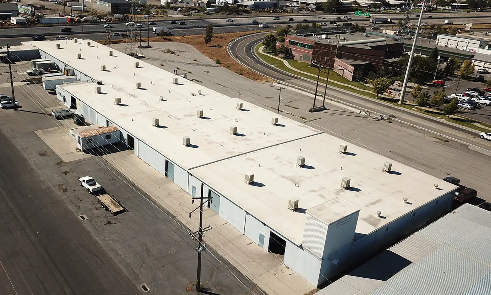
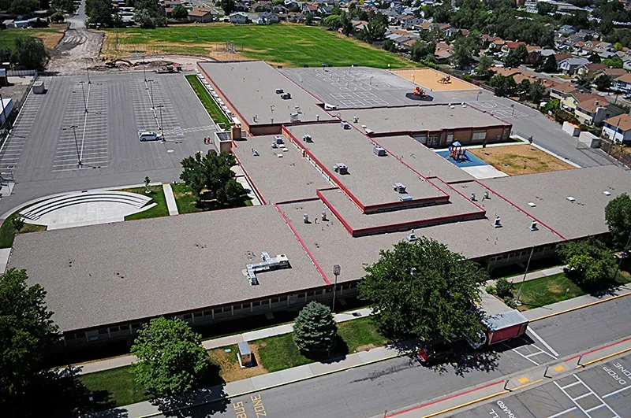
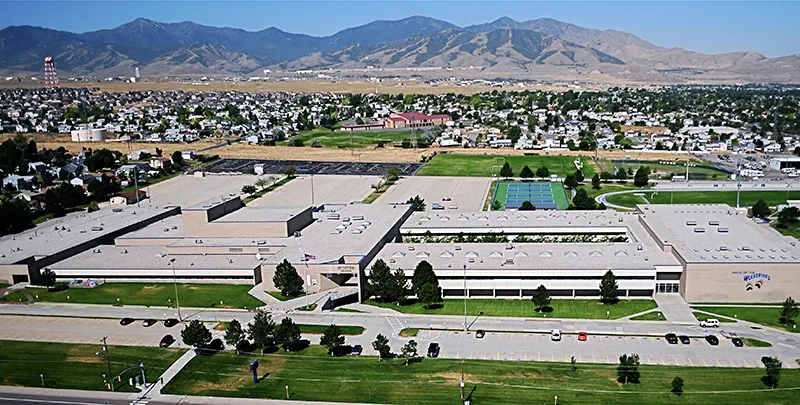
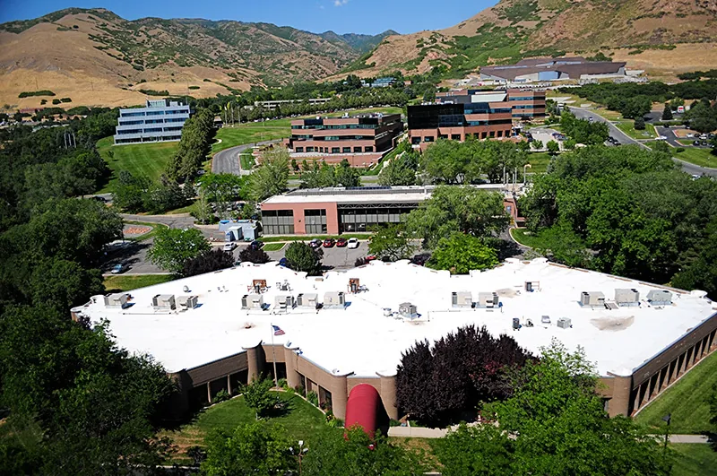
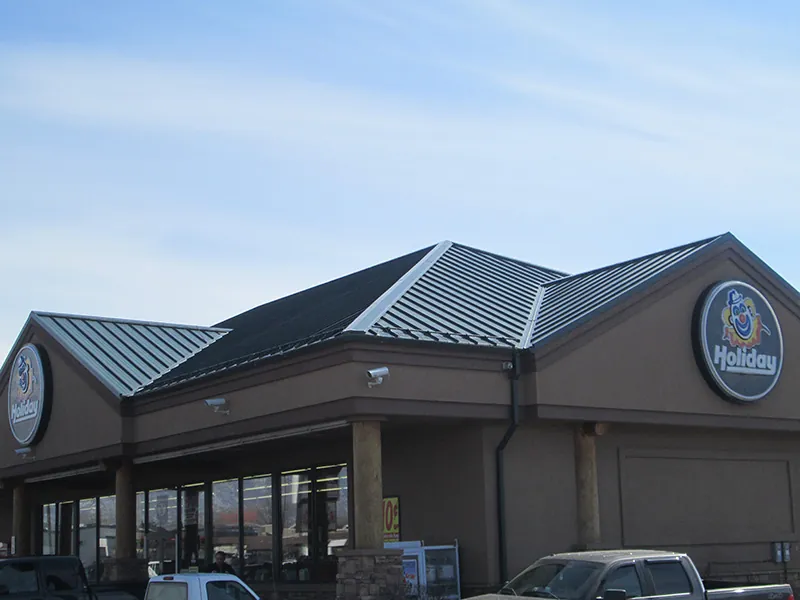
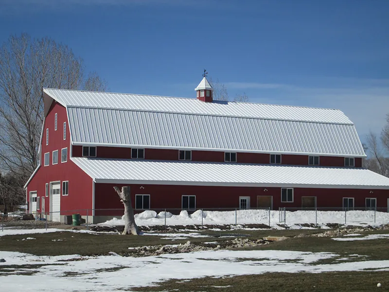
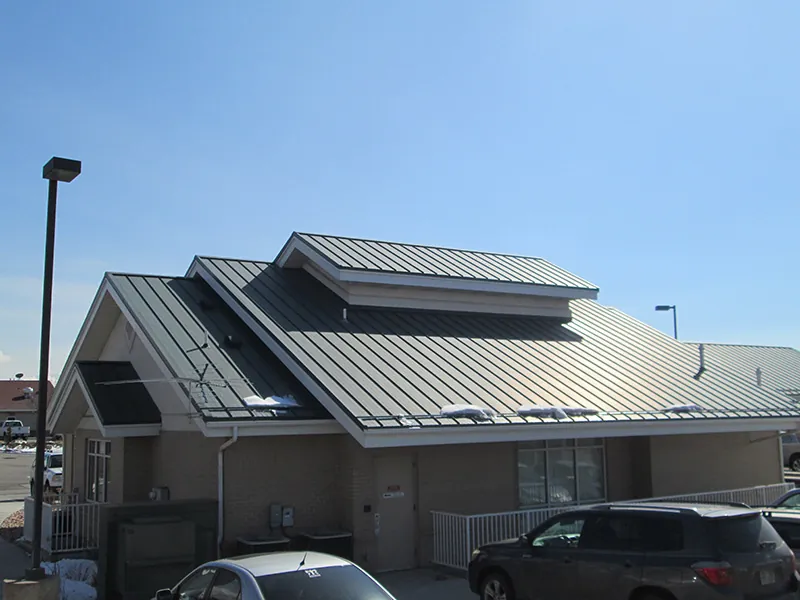
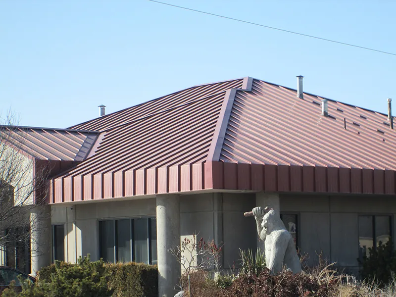
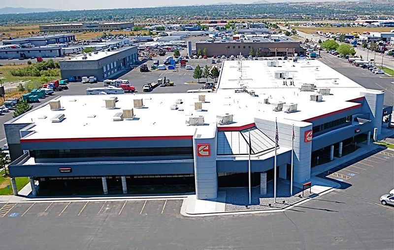
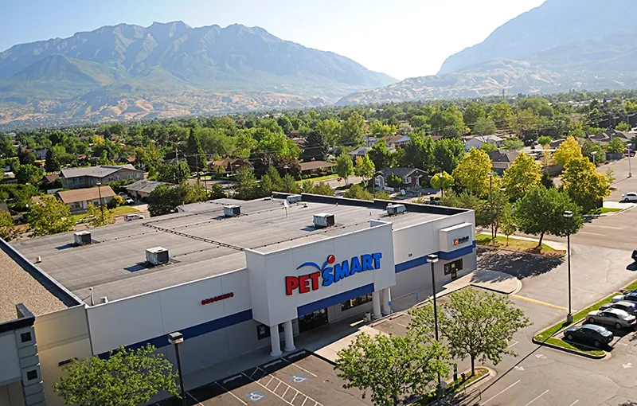
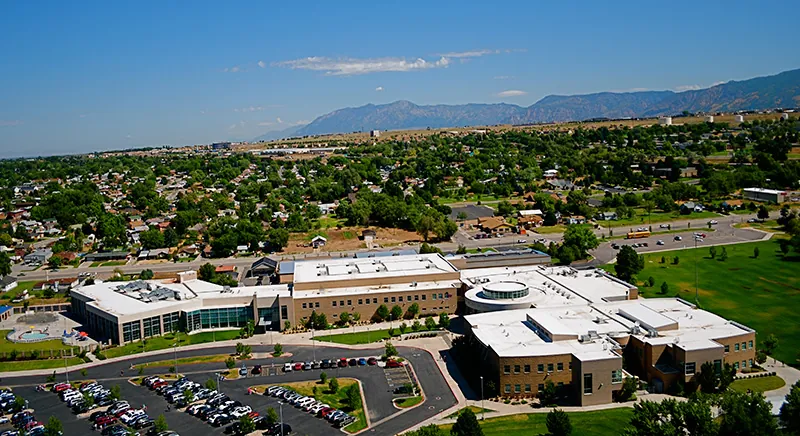
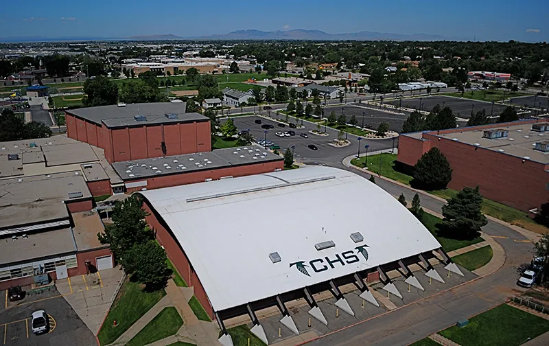
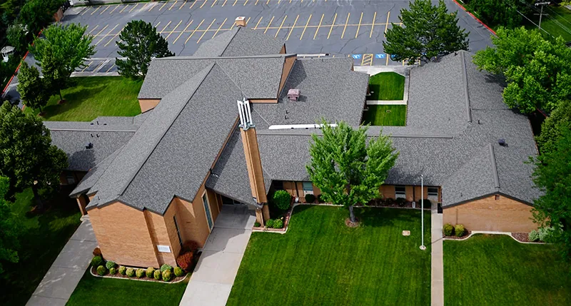
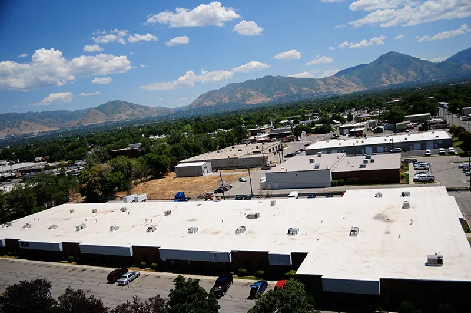
When you bring us in for a bid, you’re talking to a team that’s handled buildings like yours before: complex scope, phased scheduling, occupied facilities, warranty documentation, and more. That’s portfolio-scale reliability, built since 1954.
The clients who keep calling us back say it better than we can.
Repair, Restore, or Replace—We Help You Decide
The right call depends on each roof’s age and condition, and your budget cycle. We’ll help you make the decision with confidence.
Commercial Roof Repair
When you have a specific roofing problem, but there’s life left in it, targeted commercial roof repair services protect your budget and your warranty. We address damage at the source and document every repair to keep your manufacturer coverage intact.
Commercial Roof Replacement
When you’re past the point of repairs and need a solution that lasts, our commercial roof replacement contractors manage the entire replacement around your schedule. That means clear documentation for your stakeholders, warranty coverage from day one, and phased execution that keeps tenant and staff disruption to a minimum.
Roof Restoration and Coating
If you’re facing a capital expenditure conversation you’re not ready for, restoration may buy you significant runway. A manufacturer-approved coating on a structurally sound roof can add years to its life at a fraction of replacement cost and keep your warranty active in the process.
Why Commercial Property Managers Choose American Roofing
American Roofing has earned the coverage and track record that complex commercial projects demand.
Manufacturer Certification
American Roofing holds CertainTeed’s Gold Star commercial certification, available only to certified contractors that meet specific industry criteria. It’s one of the most valuable things we bring to a commercial project.
Over $1M in Liability Coverage
Our liability coverage exceeds $1,000,000, which is higher than the industry standard and approved by the majority of the largest commercial roofing manufacturers worldwide.
70+ Years of Utah Commercial Experience
Our liability coverage exceeds $1,000,000, which is higher than the industry standard and approved by the majority of the largest commercial roofing American Roofing has operated in Utah since 1954. Many of our commercial roofers have 15+ years with our company alone. That’s institutional knowledge across every major roof system and building type in the state.
BBB-Certified and Gephardt Approved
We prioritize fair pricing, professional conduct, and accountability to our clients, as demonstrated by BBB recognition and Gephardt Approval.
Long-Term Warranty and Maintenance Support
We offer maintenance plans that keep your system inspected, documented, and under active warranty, so you’re never caught off guard.
Our Commercial Roofing Services
- Industrial Roofing
- Commercial Roof Replacement
- Commercial Roof Repairs
All Major Commercial Roof Systems
American Roofing installs, repairs, and maintains every major commercial roofing system used in Utah.
TPO (Thermoplastic Polyolefin)
Lifespan: 20-30 years
UV-reflective, energy-efficient, and leak-resistant thanks to heat-welded seams. A common choice for office buildings, retail centers, and warehouses in Utah.
EPDM (Ethylene Propylene Diene Monomer)
Lifespan: 20-30 years
A rubber-based membrane valued for cold-climate flexibility, cost-effectiveness, and ease of repair. Well-suited for warehouses, office parks, and manufacturing facilities.
PVC (Polyvinyl Chloride)
Lifespan: 20-30 years
Superior resistance to chemicals, grease, and fire with heat-welded watertight seams. The top choice for restaurants, hospitals, food processing, and industrial properties.
Modified Bitumen
Lifespan: 15-25 years
A multi-ply asphalt system with enhanced flexibility and puncture resistance. Proven for schools, government facilities, and institutional properties with heavy rooftop traffic.
Built-Up Roofing (BUR)
Lifespan: 20-30+ years
Alternating layers of bitumen and reinforcing fabric create redundant waterproofing. One of the most durable systems available for large industrial and institutional buildings.
Metal Roofing
Lifespan: 40-70+ years
Fire-resistant, energy-efficient, and built for the long term. Available in standing seam, batten seam, and panel styles for commercial and industrial properties.
Roof Coatings and Restoration
Lifespan: 10-20+ years
Manufacturer-approved coating systems can extend roof life and may qualify under existing warranty terms. The right system depends on your roof type and current condition.
Our Commercial Roofing Repair & Replacement Process
Step 1: Free Quote
For clear-scope projects, we assess the site, recommend a system, and provide project pricing at no cost.
Step 2: Paid Diagnostic Inspection
We conduct a full roof assessment and deliver a written report with findings, photographs, and recommendations.
Step 3: Findings and Recommendations
We walk you through your options (repair, restore, or replace) with clear cost-benefit trade-offs at each level.
Step 4: Scope and Bid
We create a detailed bid: scope of work, material specifications, phasing plan, and warranty documentation framework.
Step 5: Scheduling and Execution
We coordinate around your operational schedule, using phased execution for occupied buildings to minimize tenant and staff disruption.
Step 6: Warranty and Maintenance Plan
We provide full warranty documentation and ongoing maintenance plan options to keep your roof active and performing long-term.